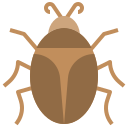
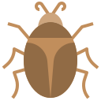

Tapejara
Lão Dực Long kỷ Phấn trắng
Tổng quan
Kỷ
Cretaceous
Họ
Tapejaridae
Chi
Tapejara
Dài
2 m
Sải cánh
1.3 m
Thức ăn

 

Tapejara là một chi thằn lằn bay thuộc họ Tapejaridae, sống vào cuối kỷ Phấn trắng, giai đoạn Santonian ở Brazil. Loài tiêu biểu và là loài duy nhất hiện được hầu hết các nhà khoa học chấp nhận là T. Wellnhoferi.
Nguồn: wikipedia.org
Phân bố
Khu vực Nam Mỹ
Thông tin thêm về Tapejara
Kỷ nguyên và phân bố
Tapejara sống vào cuối kỷ Phấn trắng, trong giai đoạn thành hệ Santana, ở Brazil, Nam Mỹ, khoảng từ 127 đến 112 triệu năm trước.
Tên khoa học
Được đặt tên bởi Kellner vào năm 1989. Cái tên Tapejara xuất phát từ một từ Tupi có nghĩa là "người già". Loài điển hình và chỉ có một loài hiện được hầu hết các nhà nghiên cứu công nhận là hợp lệ, là T. Wellnhoferi . Tên cụ thể vinh danh nhà cổ sinh vật học người Đức Peter Wellnhofer.
Kích thước
Tapejara là một loài thằn lằn bay nhỏ, với chiều dài khoảng 2 mét và sải cánh dài khoảng 1,23-1,3 mét (4,0-4,3 ft).
Ngoại hình
Tapejara có đặc điểm nổi bật là có một chiếc đầu khá lớn so với thân, với một chiếc mỏ dài, phẳng và hơi cong xuống, và những chiếc mào bao gồm một mào hình bán nguyệt trên mõm và một ngạnh xương kéo dài ra sau đầu. Nó có cánh rộng, bằng khoảng 3 lần chiều dài của thân, với mỗi cánh có một màng da kéo dài từ cổ tay đến chân. Chúng được cho là có thể bay như một con chim cánh đập và sử dụng các màng da để giữ thăng bằng khi bay.
Chế độ ăn và săn mồi
Tapejara có thể là động vật ăn tạp. Bao gồm cá và các loại bọ, đôi khi nó cũng có thể ăn cả xác động vật có xương sống nhỏ. So sánh giữa các vòng xơ cứng của Tapejara với các loài chim và bò sát hiện đại cho thấy rằng nó có thể là kiểu loài cathemeral, hoạt động kiếm ăn và di chuyển suốt cả ngày, nhưng chỉ trong khoảng thời gian ngắn chứ không phải ngủ một lần mỗi ngày như kiểu loài monophasic.
Khám phá
Ngoài Tapejara, còn có hai loài lớn hơn, ban đầu được đặt tên là Tapejara Imperator và Tapejara Navigans, sau đó được xếp vào chi Tapejara. Tuy nhiên, một số nghiên cứu đã chỉ ra rằng T. Imperator và T. Navigans khác biệt đáng kể so với T. Wellnhoferi và do đó đã được phân loại lại thành các chi mới. Loài T. Imperator được đặt cho chi riêng của nó, Tupandactylus, bởi Alexander Kellner và Diogenes de Almeida Campos. Unwin và Martill phát hiện ra rằng T. Imperator và T. Navigans thuộc cùng một chi, và đặt tên cho chúng là Ingridia Imperator và Ingridia Navigans, tên chi này vinh danh Ingrid, người vợ quá cố của Wellnhofer.
Vì Tupandactylus được đặt tên đầu tiên nên nó được ưu tiên hơn tên Ingridia. Để làm phức tạp thêm vấn đề, cả hai cái tên Tupandactylus và Ingridia đều sử dụng cựu đế chế Tapejara làm loài điển hình của chúng. Các nhà khoa học mô tả Tupandactylus đã không đặt tên cho Tupandactylus Navigans (mà thay vào đó gợi ý rằng nó đồng nghĩa với Tupandactylus imperator), và Tapejara Navigans không chính thức được phân loại lại thành một loài riêng biệt của Tupandactylus cho đến năm 2011.